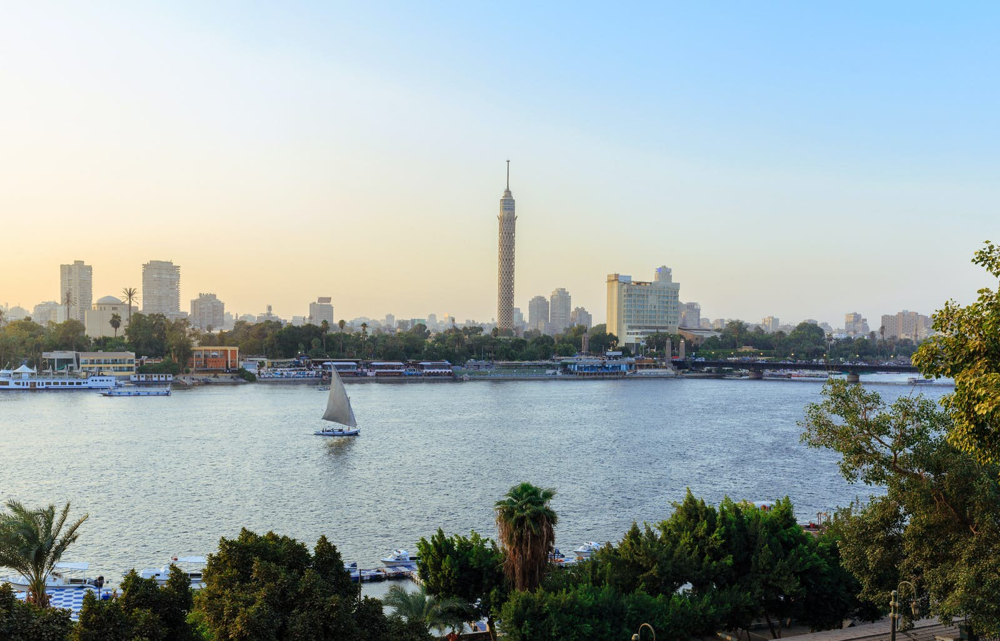

Egypt is a transcontinental country spanning the northeast corner of Africa and southwest corner of Asia by a land bridge formed by the Sinai Peninsula. Egypt is a Mediterranean country bordered by the Gaza Strip (Palestine) and Israel to the northeast, the Gulf of Aqaba and the Red Sea to the east, Sudan to the south, and Libya to the west. Across the Gulf of Aqaba lies Jordan, across the Red Sea lies Saudi Arabia, and across the Mediterranean lie Greece, Turkey and Cyprus, although none share a land border with Egypt.
Egypt is a transcontinental country spanning the northeast corner of Africa and southwest corner of Asia by a land bridge formed by the Sinai Peninsula. Egypt is a Mediterranean country bordered by the Gaza Strip (Palestine) and Israel to the northeast, the Gulf of Aqaba and the Red Sea to the east, Sudan to the south, and Libya to the west. Across the Gulf of Aqaba lies Jordan, across the Red Sea lies Saudi Arabia, and across the Mediterranean lie Greece, Turkey and Cyprus, although none share a land border with Egypt.Egypt has one of the longest histories of any country, tracing its heritage along the Nile Delta back to the 6th–4th millennia BCE. Considered a cradle of civilisation, Ancient Egypt saw some of the earliest developments of writing, agriculture, urbanisation, organised religion and central government. Iconic monuments such as the Giza Necropolis and its Great Sphinx, as well the ruins of Memphis, Thebes, Karnak, and the Valley of the Kings, reflect this legacy and remain a significant focus of scientific and popular interest. Egypt's long and rich cultural heritage is an integral part of its national identity, which has endured, and often assimilated, various foreign influences, including Greek, Persian, Roman, Arab, Ottoman Turkish, and Nubian. Egypt was an early and important centre of Christianity, but was largely Islamised in the seventh century and remains a predominantly Muslim country, albeit with a significant Christian minority.
 From the 16th to the beginning of the 20th century, Egypt was ruled by foreign imperial powers: the Ottoman Empire and the British Empire. Modern Egypt dates back to 1922, when it gained nominal independence from the British Empire as a monarchy. However, British military occupation of Egypt continued, and many Egyptians believed that the monarchy was an instrument of British colonialism. Following the 1952 revolution, Egypt expelled British soldiers and bureaucrats and ended British occupation, nationalized the British-held Suez Canal, exiled King Farouk and his family, and declared itself a republic. In 1958 it merged with Syria to form the United Arab Republic, which dissolved in 1961. Throughout the second half of the 20th century, Egypt endured social and religious strife and political instability, fighting several armed conflicts with Israel in 1948, 1956, 1967 and 1973, and occupying the Gaza Strip intermittently until 1967. In 1978, Egypt signed the Camp David Accords, officially withdrawing from the Gaza Strip and recognising Israel. The country continues to face challenges, from political unrest, including the recent 2011 revolution and its aftermath, to terrorism and economic underdevelopment. Egypt's current government is a semi-presidential republic headed by President Abdel Fattah el-Sisi, which has been described by a number of watchdogs as authoritarian or heading an authoritarian regime.
From the 16th to the beginning of the 20th century, Egypt was ruled by foreign imperial powers: the Ottoman Empire and the British Empire. Modern Egypt dates back to 1922, when it gained nominal independence from the British Empire as a monarchy. However, British military occupation of Egypt continued, and many Egyptians believed that the monarchy was an instrument of British colonialism. Following the 1952 revolution, Egypt expelled British soldiers and bureaucrats and ended British occupation, nationalized the British-held Suez Canal, exiled King Farouk and his family, and declared itself a republic. In 1958 it merged with Syria to form the United Arab Republic, which dissolved in 1961. Throughout the second half of the 20th century, Egypt endured social and religious strife and political instability, fighting several armed conflicts with Israel in 1948, 1956, 1967 and 1973, and occupying the Gaza Strip intermittently until 1967. In 1978, Egypt signed the Camp David Accords, officially withdrawing from the Gaza Strip and recognising Israel. The country continues to face challenges, from political unrest, including the recent 2011 revolution and its aftermath, to terrorism and economic underdevelopment. Egypt's current government is a semi-presidential republic headed by President Abdel Fattah el-Sisi, which has been described by a number of watchdogs as authoritarian or heading an authoritarian regime.  Islam is the official religion of Egypt and Arabic is its official language. With over 100 million inhabitants, Egypt is the most populous country in North Africa, the Middle East, and the Arab world, the third-most populous in Africa (after Nigeria and Ethiopia), and the thirteenth-most populous in the world. The great majority of its people live near the banks of the Nile River, an area of about 40,000 square kilometres (15,000 sq mi), where the only arable land is found. The large regions of the Sahara desert, which constitute most of Egypt's territory, are sparsely inhabited. About half of Egypt's residents live in urban areas, with most spread across the densely populated centres of greater Cairo, Alexandria and other major cities in the Nile Delta.
Egypt is considered to be a regional power in North Africa, the Middle East and the Muslim world, and a middle power worldwide. With one of the largest and most diversified economies in the Middle East, which is projected to become one of the largest in the world in the 21st century, Egypt has the third-largest economy in Africa, the world's 40th-largest economy by nominal GDP, and the 19-largest by PPP. Egypt is a founding member of the United Nations, the Non-Aligned Movement, the Arab League, the African Union, and the Organisation of Islamic Cooperation.